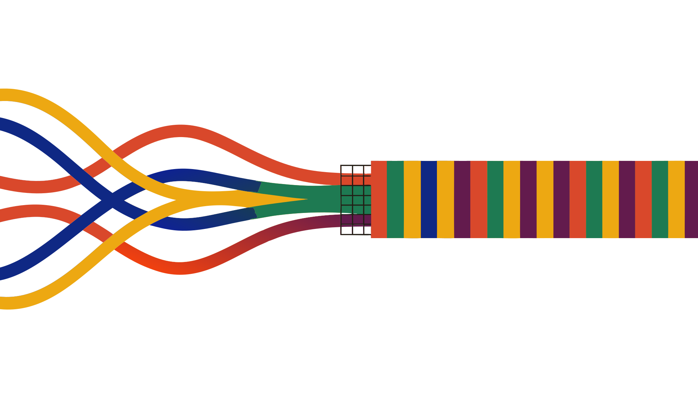

Same campaign, five different numbers.Your database knows which one is true.
BayesAI audits every tool in your marketing stack against your own backend, and against plain arithmetic. It flags the moment numbers stop making sense, names the root cause, and drafts the fix in plain English.
BUILT FROM 10 YEARS OF AUDITS AT L'ORÉAL · UNDER ARMOUR · HYPEROPTIC
LIVE SCAN · ALL SOURCES vs DATABASEscanning
GA4MetaTikTokGoogle AdsCRMYour database
✱/checkout/error fired purchase events: GA4 above database✱43% of Add-to-Carts fired on the cart page, feeding every campaign✱full cardholder name + expiry found in GA4, caught in staging✱frontend AOV half of backend: double-fired GTM tag✱begin_checkout 2.7× per session: mathematically impossible✱zero-revenue reseller orders skewing AOV across every site
Bad data is a line item.
Nº 01 · THE PROBLEM
You just haven't put it on the P&L yet. Every figure below is sourced; none of them is the scary one, which is whatever your own stack is misreporting right now.
0%of revenue lost to poor data quality, on average · Experian, 2023
$0Maverage annual loss per organisation · Gartner, 2021
0%of media budgets wasted on inaccurate data · Monte Carlo
0%of data professionals don't fully trust their org's data · Precisely, 2024
$0Tyearly cost of bad data, US alone · Gartner via HBR
These weren't startups. They were global brands with full analytics teams. The problem is structural, not a hiring issue.
Four steps to one truth.
Nº 02 · HOW IT WORKS
Every source is a thread. BayesAI weaves them against the one thread that cannot lie: your own database.
01
Connect
Read-only links to your analytics, ad platforms, CRM, consent platform, and the backend database itself. Nothing to install, nothing to break.
GA4MetaAdsDB
02
Baseline
Consent-aware expected ranges, per source. A 40% gap between site and GA4 can be normal or a disaster: it depends on your consent rate, and BayesAI knows yours.
03
Scan
Every number cross-checked against every source and against arithmetic. More sales than your database made? Flagged on sight. 2.7 checkouts per session? Cannot happen.
04
Fix
Root cause named in plain English, fix drafted for your team or agency, and the check keeps running so the same lie never comes back quietly.

FIVE SOURCES IN · ONE TRUTH OUT
The collection.
Nº 03 · FEATURES
Five checks in production, three on the loom. Each one exists because a real audit found the failure it now prevents.
TAG MONITORS WATCH THE PLUMBING; WAREHOUSE TOOLS WATCH STORAGE. 4 OF THESE 6 CHECKS HAVE NO COMPETITOR AT ALL.
Discrepancy Checker
Every source against every other, and against the database. Consent-aware ranges, so real gaps aren't noise and noise isn't ignored.
V1 · shipping
PII Finder
Scans URL params, search terms, DOM and logs for names, emails, cards. A staging alert is a risk; a production alert is a leak. Catch it in staging.
V1 · shipping
Average Comparison
AOV, item price, ARPU, order frequency: database versus every tool. A halved frontend AOV is the loudest red flag double-counting ever waves.
V1 · shipping
dataLayer Checker
Watches every push against your critical-event list, and alerts when an element your tracking depends on quietly changes underneath it.
V1 · shipping
Frequency Logic
Events per session, per user, per order, checked against their siblings. begin_checkout at 2.7 per session isn't behaviour, it's a bug.
V1 · shipping
Hierarchical Logic
AI walks your funnels like a real user and validates each step's data. Earlier steps reporting less than later ones is how it caught six broken checkouts.
V2 · on the loom
Supreme Attribution
The only attribution model anchored to validated database numbers: ad platforms, analytics, CRM and CMP normalised against reality.
V2 · on the loom
Marketing Intelligence
Cohorts, CAC, CLTV, profit-based ROAS: the hardest numbers in marketing, computed only on data that passed the checks. Every figure carries a health status.
V2 · on the loom
We didn't invent these.
Nº 04 · EVIDENCE
Seven audits at global enterprises, anonymised. Every feature in the collection exists because one of these happened.
Case Nº 06 · Company ΔPII Finder
Full cardholder names and card expiry dates, sitting in GA4.
Name, surname, email, address and partial card numbers leaked into analytics. UK GDPR exposure: up to £17.5M or 4% of turnover, with a 72-hour notification duty.
→ caught in staging, it would have cost nothingCase Nº 04 · Company ZFrequency Logic
43% of Add-to-Cart events fired on the cart page itself.
A free-sample picker triggered ATC on every visit. Google, Meta and TikTok campaigns spent months optimising toward an event that was one-third fiction.
→ every downstream campaign was re-optimisedCase Nº 03 · Company YDiscrepancy Checker
GA4 reported more transactions than the database had made.
An error page was firing purchase events from the backend, so failed payments counted as sales, right as the company launched in Italy on those numbers.
→ backend ≥ frontend, always: flagged on sightCase Nº 05 · Company ZAverage Comparison
Reported AOV suddenly half of what the database showed.
A GTM tag fired twice per purchase for a quarter. Totals looked plausible; the averages betrayed it. Four red flags, one root cause, dated to the exact release.
→ halved frontend AOV: the loudest red flag there is
"Every existing tool tells you whether your data moved. BayesAI tells you whether your data is right."
THE ONE-SENTENCE VERSION OF EVERYTHING ABOVE
"I have never seen a company whose data wasn't broken in ways they couldn't see. Not startups: L'Oréal, Under Armour, global enterprises with full analytics teams. The problem is structural. So I built the auditor."
Merve Cebi Šafránek, founder
10+ years in data. Built a €1M e-commerce business on a €20K budget, then spent a decade finding the errors every tool and every team had already missed.
SERIOUS ABOUT NUMBERS · ALLERGIC TO GRAY
Three sizes of certainty.
Nº 05 · PRICING
Priced against what bad data already costs you. One recovered discrepancy typically pays for the year.
Essentials
For mid-market brands that suspect their data is broken but can't prove it.